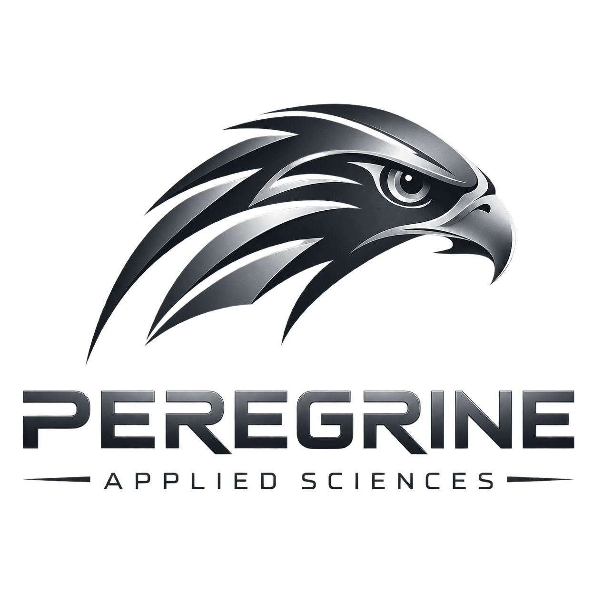

RF and C5ISR
RF architecture, tactical networking, sensing support, communications engineering, and integration analysis.
Defense engineering • Applied R&D
Peregrine Applied Sciences develops RF/C5ISR, autonomy, aerospace, and systems-engineering solutions for government and defense programs.
Current focus: first-pass engineering contracts, FOVEA software maturation, and partner integration for PACN-01 and P-360.
Interactive globe shows a representative PACN node, notional tracks, and visitor geolocation when browser permission is available.
Company
Peregrine sits at the intersection of RF, software, systems engineering, avionics, modeling, and technical data.
RF architecture, tactical networking, sensing support, communications engineering, and integration analysis.
Mission logic, decision support, operator workflows, simulation tooling, and distributed-systems software.
CAD, drawing support, lab integration, instrumentation, verification planning, and technical reporting.
Programs
Public program descriptions below are intentionally high level and non-sensitive.
A modular airborne node for communications, mission compute, track services, and distributed sensing workflows.
Program detailsFOVEA Engine and Peregrine Mission Console support simulation, cooperative fusion, decision provenance, and operator workflows.
Software overviewA longer-term purpose-built aircraft concept intended to host advanced payloads, autonomy, and persistent mission services.
What comes nextPeregrine Mission Console
FOVEA and Peregrine Mission Console are already producing usable operator workflows for scenario design, tracking, replay, network topology, and decision traceability.

What we need now
Peregrine is ready for small, bounded engineering work while maturing the first demonstrable PACN-01 / FOVEA prototype path.
Subsystem engineering, integration support, technical studies, test support, and drawing-package development.
Airframe, UAS, payload-integration, and fabrication partners aligned with rapid technical risk reduction.
Universities, labs, and suppliers interested in mission software, RF payloads, and systems experimentation.
Leadership
Air Force veteran, F-16 avionics technician, systems engineer, and ASU electrical engineering student. Austin brings mission-systems thinking, CAD support, technical documentation, and hands-on RF / integration experience.
He also created InjectLab, a research-oriented AI effort referenced for its technical novelty and applied experimentation.
Raul brings 20 years of Army RF, retransmission, depot-level, and field communications experience across a wide range of Army systems.
His background anchors Peregrine's understanding of operational communications problems, maintainability, and military field realities.
Jose brings 30 years of CAD modeling, dimensional-drawing, and technical-data-package experience.
He supports Peregrine's transition from concept to producible design, configuration discipline, and mechanical documentation.
Contact
We are open to early contract work, technical collaboration, and serious discussions around PACN-01, FOVEA, and prototyping support.

Defense engineering • RF/C5ISR • autonomy • technical data
peregrineappliedsciences.com info@peregrineappliedsciences.com (915) 270-3223